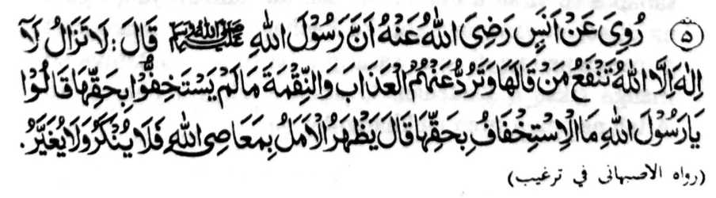

Miyapanothol a miyaka thitayan ko Anas (Radhiallaho Anto) a mata-an a so Rasulollah (Sallallaho ‘Alaihi Wasallam) na miyatharo iyan, uDiden pepharempes so kapephakanggay a gona o Laa Ilaaha Illallaho ko tao a gi-i ron tharo go so kapekhalindinga Niyan non ko manga siksa ago so tiyoba ko tenday o di niyan kindarainonen ko kabenar Iyan. ’ Pitharo iran (a manga Sahabah), “Anda manaya-i kinindarainonen ko kabenar angkanan a Kalimah?” Miyatharo iyan, “Amay ka marinayag so galebek a sopak ko Allah na di ran pakarata-an ago isapar. ” [At-Targhib]
Imanto na sekano den-i pamimikiran o pira a dosa a pekhasogok imanto a masa, ogaid na da a thotomangked a tipengan niyan meren ago sowapar. Si-i sangka-iya a tanto a piyakalek-lek ago kaongkir a betad, na so kaa-aden o manga Muslim sangka-iya donya na tanto a mala a limo o Allah, ka o di [mabaloy a limo] na aya pekhakawit tano na so kabinasa-an a nggolalan ko apiya antona-a sabap. So Hazrat A’isha (Radhiallaho ‘Anha) na iniza-an niyan so Nabi (Sallallaho ‘Alaihi Wasallam), “Igira miyaka-oma so siksa o Allah, ba niyan kharambit so khipipiya-piya sa lagid o betad o manga darowaka?” Inisembag o Nabi (Sallallaho ‘Alaihi Wasallam), “Oway, kharambit siran non langon sangka-iya donya, ogaid na si-i ko Gawi-i a Kaphangoyag na so phipiya-piya na khabelag ko manga baradosa.” Giyoto-i sabap a so siran a masoso-at den ko ‘amaal iyan, ogaid na di sekaniyan magogop ko kaphagozor o (paratiyaya) o manga ped na di siran sasarig o ba siran matatabiya ko manga siksa o Kadenan. O aden a siksa a pho-on ko Allah na apiya siran na kharambit on.